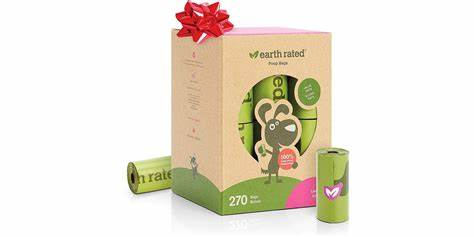

Las Mejores Marcas
Estos son las Marcas mas vendidas en el internet:
Estos perros son muy interesantes y por esa misma razon son populares en internet,son perros que mucha gente tiene en su mente a la hora de elegir uno como mascota, a la hora de adoptar hay mucha gente que es celectiva en esto, pero tambien hay quienes escojen a estas adorables creaturas por su belleza cabe destacar que tambien hay productos que segun las grandes empresas son los mas recomendables, saludables e incluso potenciadores para tus mascotas te las estaremos presentando aqui tambien.
Cama para gatos PetPawJoy
La marca para mascotas petpawjoy es una de las mejores marcas en camas de animales:
La marca para mascotas petpawjoy es una de las mejores marcas en camas de animales:
- Son Comodos y asequibles para la comodidad de tus mascotas.
- Esta marca se dedica a hacer trajes para animales. bastante populares en el mercado
- Es una marca originaria de Estados Unidos, bastante popular en su pais de origen.
PetPawJoy es una de las marcas mas conocidas si de camas para animales se trata cabe destacar que esta marca no solo vende camas para animales tambien vende multiples accesorios de vestimentas que son muy populares en todo el mundo. Es una marca hecha para caninos y felinos, Sin distincion sus productos son diseñados para ambos por igual.
Sofá ortopédico de felpa para mascotas Furhaven
Los Sofá ortopédico de felpa para mascotas Furhaven son bastante populares:
El sofá ortopédico reemplaza con éxito una cama completa, tiene un efecto beneficioso en la columna vertebral, promueve la relajación muscular y el descanso adecuado (comodidad); Entre la colección de muebles con propiedades ortopédicas, puede elegir un sofá con características adicionales (efecto de masaje, láminas ajustables, relajación);
- Tiene garantizada la comodidad en su ortopedico sin riesgo alguno.
- Gracias a su diseño tiene caracteristicas que ayudan a tu mascota a relajarse de una mejor manera.
- Las camas ortopedicas segun profecionales valen su precio y son muy utiles a la hora de la verdad.
¿Te interesa comprar el producto?
Los Sofá ortopédico de felpa para mascotas Furhaven son bastante populares:
El sofá ortopédico reemplaza con éxito una cama completa, tiene un efecto beneficioso en la columna vertebral, promueve la relajación muscular y el descanso adecuado (comodidad); Entre la colección de muebles con propiedades ortopédicas, puede elegir un sofá con características adicionales (efecto de masaje, láminas ajustables, relajación);
¿Te interesa comprar el producto?
Bolsas para perros Earth Rated

Las bolsas para caca de perro Earth Rated:
El Dispensador de bolsas para excremento de perro oporte patentado correa de silicona duradera.
L y mecanismo de bloqueo fuerte , para mantener las bolsas seguras, Contiene. 60 BOLSAS en
4 rollo con olor a lavanda 100% recomendadas si vas a salir con tu canino amigo al parque o a cualquier lado.
- Son desechables bastante resistentes a las diversas situaciones a enfrentar.
- Mucha gente lo recomienda por su increible cantidad y por tener un precio que es muy accesible.
- Dependiendo de cual compres el pequeño, mediano o grande, Tendras diferente cantidad en tu producto
Las bolsas para caca de perro Earth Rated:
El Dispensador de bolsas para excremento de perro oporte patentado correa de silicona duradera. L y mecanismo de bloqueo fuerte , para mantener las bolsas seguras, Contiene. 60 BOLSAS en 4 rollo con olor a lavanda 100% recomendadas si vas a salir con tu canino amigo al parque o a cualquier lado.